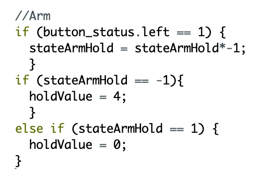

Design Notebook - Assignment Seven
This page will have the homework answers and design notebook content!
Homework:
Integration Test
Video of the robot completing all 3 phases of the course
Mechanical Performance
Notes:
The robot is able to climb the ramp but often struggles.
I moved the arduino and breadboard so they are upright to fit the servo onto the body.
This works but also increased the center of gravity.
The servo for the arm often begins to lift off the body so I moved the 9v battery to be stored on top of it to add a force on top of it to hold it down.
-- See sketch 1 and 2
Sketches:
User Experience
Notes:
I wanted to improve the usage of the claw:
I added usage of the up button to lift the arm servo at a greater speed to make it lift faster but for precision, the b button still lifts up slowly.
The arm servo needs to have a small force into it to hold the arm in place while at shallow angles.
Previously I would just press b rapidly (doing pwm with my thumb if you will) to hold it in place.
To fix this I used a simple state machine which would tell the motor to apply a small force to hold the arm up and toggle when I press the left button.
Sketches:
Design Notebook:
Mechanical Performance
Notes:
The robot does pick up the ball well. It is physically able to drive up the ramp.
When steering, the motion is discontinuous and difficult to steer.
Specifically while going up the ramp, the robot has a tendency to fall off.
Sketches below user exp are also somewhat mechancical performance because the idea would help the servos climb up the ramp but also help drivability.
User Experience
Notes:
The state machine to hold the arm in place functions well.
However, there is an issue with it because when the angle is larger, the force is able to rotate all the way around.
This gave me the idea to use the arm to help while going up the ramp, the arm can be reoriented to move the COM slightly and help the robot climb.
This needs more analysis but I made some sketches below with the arm at 3 different positions: